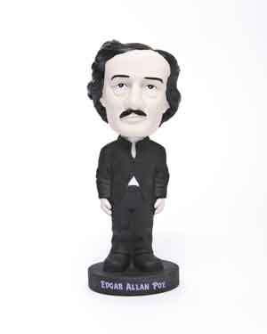
ACCOUTREMENTS, Poe Nodder, 2004
The box for this bobble-headed figure contains the full text of Poe's poem "A Dream within a Dream," a much-revised work that was first published with this title in the March 31, 1849, issue of the Boston newspaper, Flag of Our Union.
Courtesy of the Poe/Boston Project
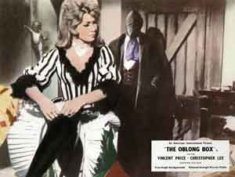
VINCENT PRICE (Actor), CHRISTOPHER LEE (Actor), Hilary Dwyer (Actor),
GORDON HESSLER (Producer and Director), The Oblong Box
American International Pictures, 1969.
Except for the title, this film has virtually nothing to do with Poe's short story, originally published in the September 1844 issue of the Lady's Book.
Courtesy of the Poe/Boston Project
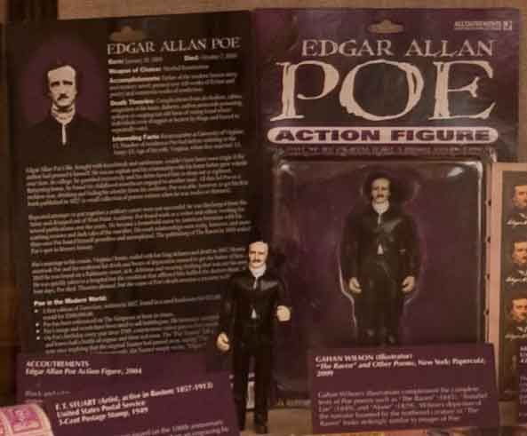
ACCOUTREMENTS
Edgar Allan Poe Action Figure, 2004
Black and white action figure of a somber Poe with a removable raven!
Courtesy of the Poe/Boston project
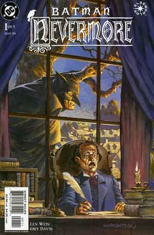
LEN WEIN (Writer), GUY DAVIS (Artist), JOHN E. WORKMAN (Letterer), and JEREMY COX (Colorist)
Batman: Nevermore, New York: DC Comics, 2003
Edgar Allan Poe both narrates this 5-part mini-series and serves as its protagonist. When bodies turn up under suspicious circumstances (standing upright behind a brick wall, buried under floor boards), young Edgar works with an antebellum version of the Batman to solve the so-called “raven murders.” By the end he has gathered enough material to start writing the poems and stories for which he is best known.
Courtesy of the Poe/Boston project
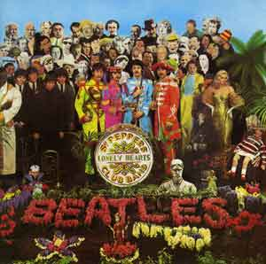
M C PRODUCTIONS (Cover)
Sgt. Pepper’s Lonely Hearts Club Band
The Beatles, Parlophone/Capitol
Record Cover, 1967
Famed English rock band The Beatles included Poe in the cover art for their eighth studio album. The Beatles' interest in Poe extended to the lyrics of "I Am the Walrus" on their 1969
Yellow Submarine album:
Semolina Pilchard, climbing up the Eiffel Tower.
Elementary penguin singing Hari Krishna.
Man, you should have seen them kicking Edgar Allan Poe.
Lennon/McCartney
Courtesy of the Poe/Boston project
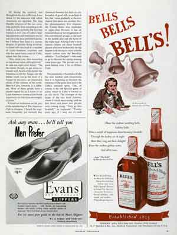
BELL’S SCOTCH WHISKEY
Magazine Advertisement, 1952
This advertisement from February 1952 uses the image of Poe and an excerpt from his poem “The Bells” (1845) to promote Scotch whiskey from Arthur Bell & Sons of Perth.
Courtesy of the Poe/Boston project
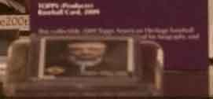
TOPPS (Producer)
Baseball Card, 2009
This collectible 2009 Topps American Heritage baseball card features “#4 Edgar Allan Poe” and his biography and literary stats.
Courtesy of the Poe/Boston project
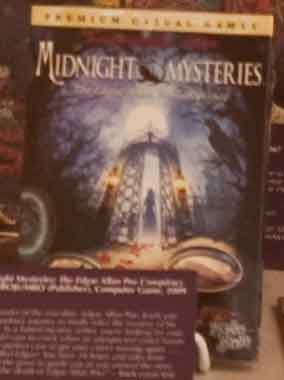
Midnight Mysteries: The Edgar Allan Poe Conspiracy
MUMBOJUMBO (Publisher), Computer Game, 2009
“The master of the macabre, Edgar Allan Poe, leads you on a shadowy journey to finally solve the mystery of his death. As a famed mystery writer, you’re looking for your next cold case to crack when an unexpected visitor hands you the perfect case to get your career moving again. …
Who killed Edgar? You have 24 hours and tales from beyond the grave to guide you as you unravel the story behind the death of Edgar Allan Poe!” – Back cover text
Courtesy of the Poe/Boston project
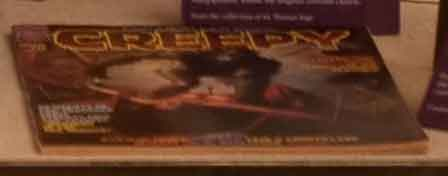
RICH MARGOPOULOS (story adaptation) and JOSE ORTIZ (art), “Murders in the Rue Morgue,”
in Creepy Stories, Issue #70
NY: Warren Publishing Co., April, 1975.
The six adaptations in this issue, all written by Rich Margopoulos, follow the original versions closely.
From the collection of M. Thomas Inge.
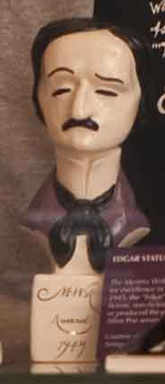
EDGAR STATUETTE, 1949
The Mystery Writers of America have named their awards for excellence in the genre the “Edgars.” Founded in 1945, the “Edgar” awards honor the best in mystery fiction, non-fiction, television, film and theatre published or produced the previous year. A small bust of Edgar Allan Poe serves as the award statuette.
Courtesy of Peter L. Stern & Company,
Antiquarian Booksellers
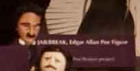
JAILBREAK, Edgar Allan Poe Figure
Courtesy of the Poe/Boston project
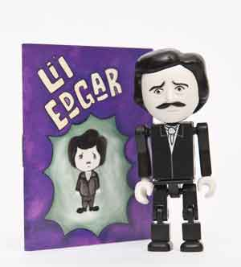
ACCOUTREMENTS
Li’l Edgar Allan Poe
This 2 ¾” (7cm) adjustable figure comes with a mini color comic book about Li’l Edgar.
Courtesy of the Poe/Boston project
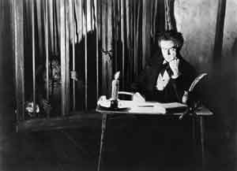
BELA LUGOSI (Actor), CHARLES GEMORA (Actor), ROBERT FLOREY (Director), and CARL LAEMMIE, JR. (Producer), Murders in the Rue Morgue, Universal Pictures, 1932
In this adaptation of Poe’s “Murders in the Rue Morgue” (1841), Bela Lugosi stars as Dr. Mirakle, a mad scientist who injects young women with ape blood in order to create a mate for his talking gorilla Erik (Charles Gemora).
Courtesy of the Poe/Boston project
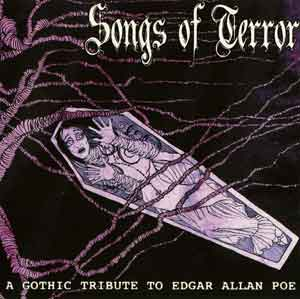
CLEOPATRA (cover art)
Songs of Terror: A Gothic Tribute to Edgar Allan Poe
Audio CD, 2001
This 14-song compilation album features Goth band tributes to Poe and his writings.
Courtesy of the Poe/Boston project
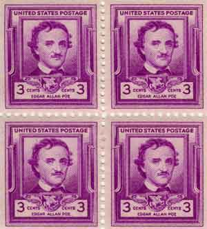
F. T. STUART (Artist, active in Boston: 1857-1913) United States Postal Service
3-Cent Postage Stamp, 1949
This postage stamp was issued on the 100th anniversary of Poe’s death in 1949 and was based on an engraving by F. T. Stuart.
Courtesy of the Poe/Boston project
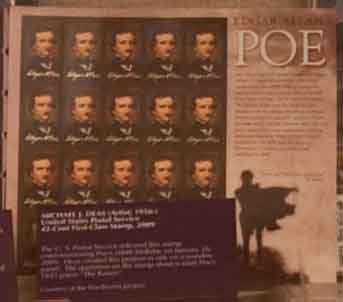
MICHAEL J. DEAS (Artist; 1956-)
United States Postal Service
42-Cent First-Class Stamp, 2009
The U. S. Postal Service released this stamp commemorating Poe’s 200th birthday on January 16, 2009. Deas created this portrait in oils on a wooden panel. The quotation on the stamp sheet is from Poe’s 1845 poem “The Raven.”
Courtesy of the Poe/Boston project
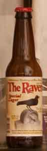
BALTIMORE-WASHINGTON BEER WORKS
The Raven Special Lager
Master brewer Hans-Martin Walz of Anker Brewery assisted Baltimore-Washington Beer Works in creating The Raven in honor of Poe. Originally produced in the Black Forest region of Baden-Württemberg, Germany, The Raven began production in Baltimore in 1998.
Courtesy of the Poe/Boston project
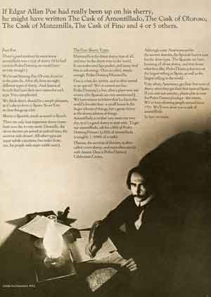
JOHN HANCOCK LIFE INSURANCE
Magazine Advertisement, 1964.
The life insurance company John Hancock utilizes an image of Poe and an assortment of images related to Poe's writings, claiming, "His genius haunts us still. . . ."
Courtesy of the Poe/Boston project
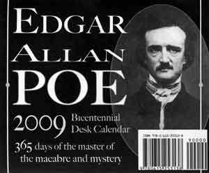
ROB VELELLA (author and publisher)
The Edgar Allan Poe 2009 Bicentennial Desk Calendar
According to its creator, this calendar provided "the Poe fan who has everything" with opportunities to "celebrate the 200th birthday of the macabre and mystery every day in 2009."
Courtesy of Rob Velella
Out of the Frog Pond
Poe's Afterlife in Pop Culture
In his struggle against the didacticism of his day, nowhere more dominant than in reform-minded Boston, Poe arrived at critical positions that supported his innovative experimentation in pop genres: poems and stories written for their own sake, to engage and delight readers. Early in his career, in the process of defending “Berenice”—a shocking tale of murder, premature burial, and amateur dentistry that he published in the Southern Literary Messenger—he insisted that what most fascinates magazine readers is “the singular wrought out into the strange and mystical.” “To be appreciated [he noted] you must be read, and these things are invariably sought after with avidity.”
In the pursuit of strong effects, Poe went on to play with genre conventions: experimenting with point of view in gothic and mock-gothic tales, inventing the detective story, and tricking readers with science fiction and fake-news hoaxes. How appropriate that, unlike many of his Frogpondian opponents (nameless here for evermore!), Poe has risen from his own premature burial to a rich, expanding afterlife in pop culture.
It is fitting, then, that this exhibit concludes with an array of materials from the world influenced by the Poe shadow, including beer bottles, comic books, t-shirts, video games, vulture eyeballs, and ravens in every shape and size. Some items poke a little fun at Poe. Most, however, highlight the wit, humor, creativity, and unmistakable smirk of one of America’s most celebrated writers.